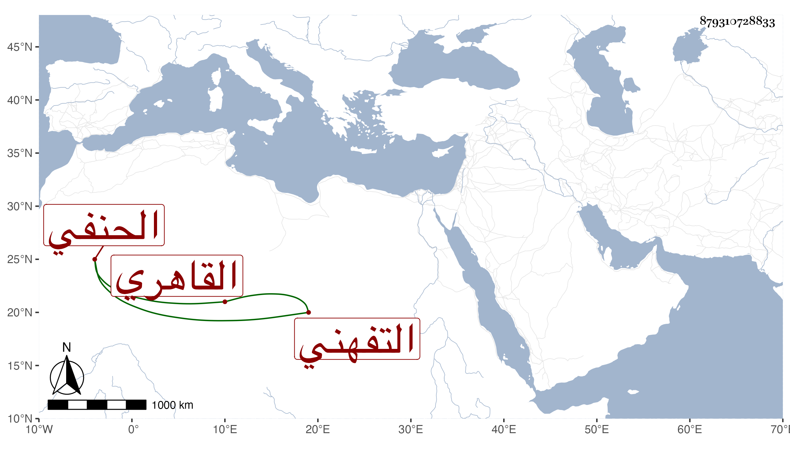

0902Sakhawi.DawLamic.ITO20230111-ara1.EIS1600.879310728833
Biography ID: 879310728833
757
محمد بن عبد الرحمن بن علي بن عبد الرحمن بن علي بن هاشم الشمس بن الزين التفهني الأصل القاهري الحنفي الماضي أبوه . ولد قبيل القرن واشتغل كثيرا ومهر وكان صحيح الذهن حسن المحفوظ كثير الأدب والتواضع عارفا بأمور دنياه مالكا لزمام أمره ، ولي في حياة أبيه قضاء العسكر وإفتاء دار العدل وتدريس الحديث بالشيخونية وبعد وفاته تدريس الفقه بها ومشيخة البهائية الرسلانية بمنشية المهراني ومشيخة الصرغتمشية وتدريس القانبيهية بالرميلة وغيرها وحصلت له محنة من جهة الدوادار تغري بردى المؤذي مع تقدم اعترافه بإحسان والده له . مات في ثامن رمضان سنة تسع وأربعين بعد تمرض طويل رحمه الله .
